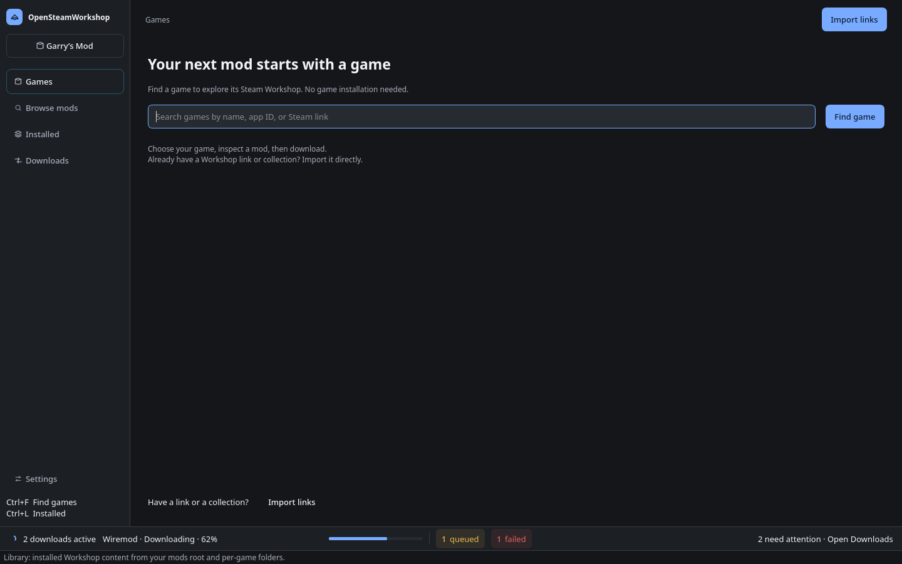
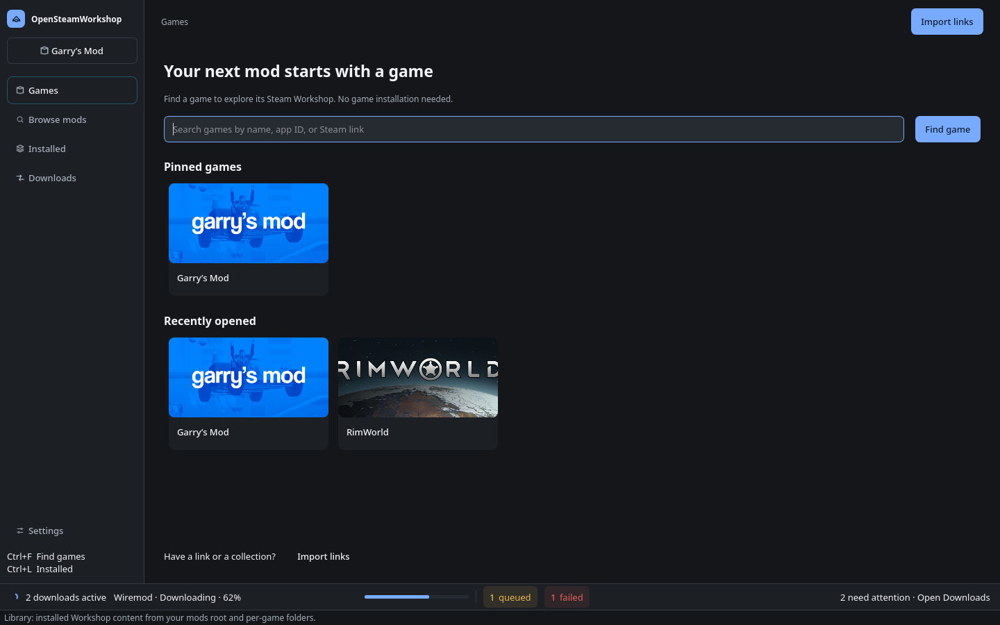
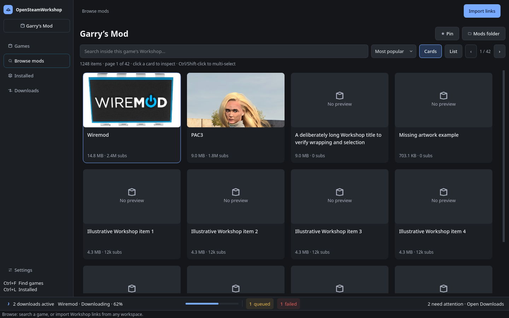
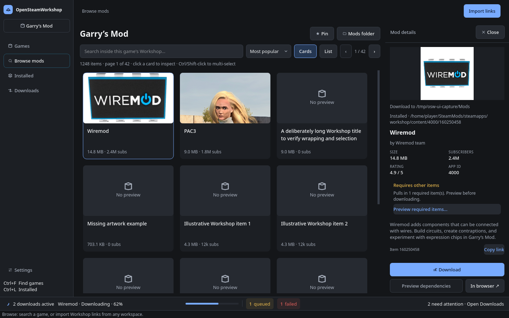
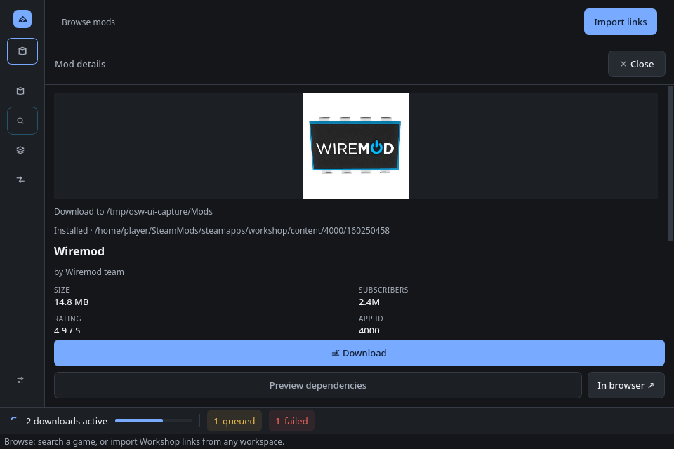
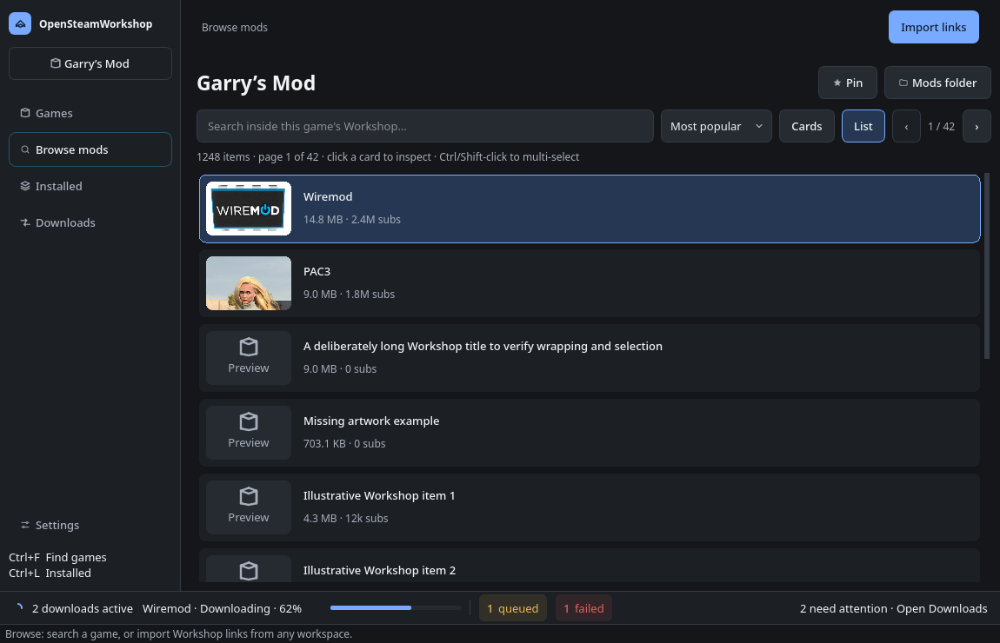
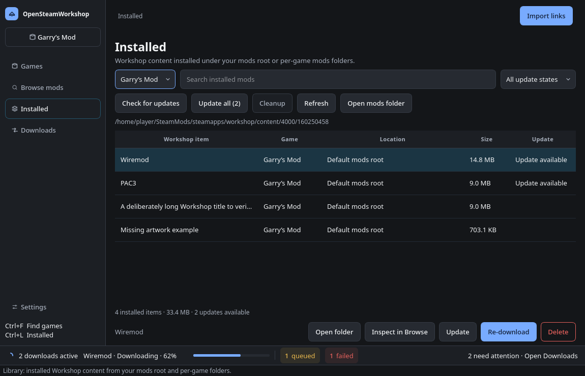
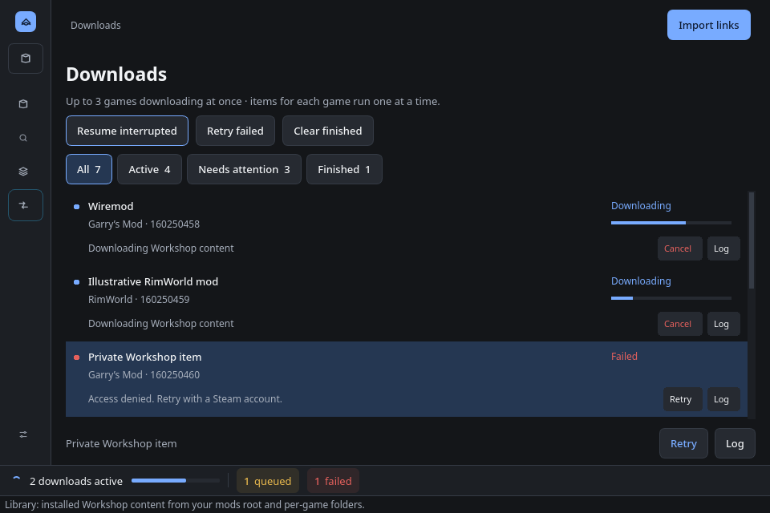
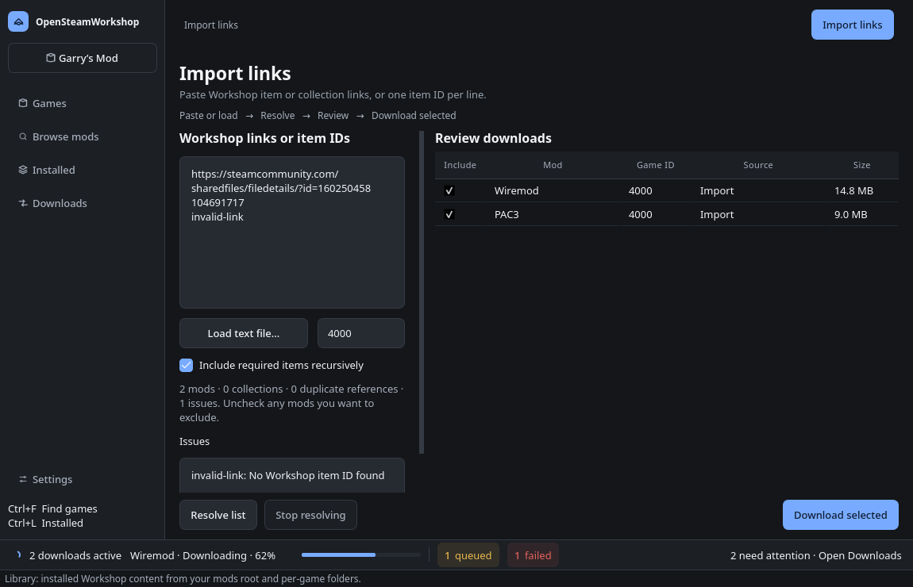
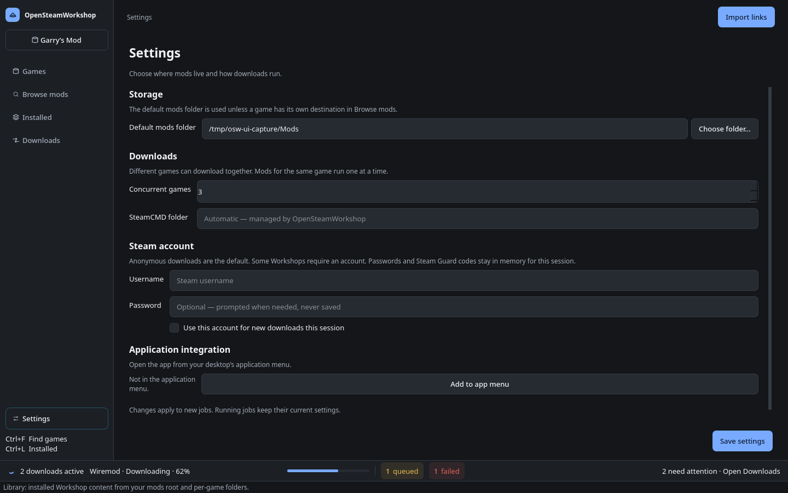

Actual PySide6 runtime captures. The native Qt implementation is the source of truth. This gallery replaces the earlier static Transfer Desk mockup; it is not a runnable product UI.
Queue states, installed content, counts and sample metadata are illustrative fixtures. Wiremod and PAC3 use real Workshop artwork. Open any image at its full resolution.
Capture instructions and artwork attribution · Design system · Product context









